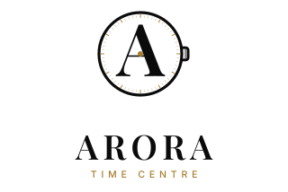
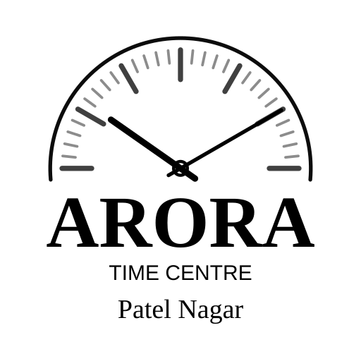

Brand identity · 2026
Time, kept beautifully.
The monogram
A dial, a surname, and a small sunrise at its centre.

A single hairline case holds a 60-tick minute track: a longer index every five minutes. The dial, drawn without ornament.
A fluted crown sits where it would on a wristwatch — the one asymmetry, and the clue that this is a timepiece.
Playfair Display SemiBold, outlined. The A fills the dial like a monument standing on the 9–3 axis.
At the exact centre of the dial, on the A's crossbar, a champagne dot reads as a jewel, a pivot — or a sun rising over the line. Arora.
Primary system


Keep the mark's spacing intact when scaling. The lockup may be reproduced in one colour (cream or ink) when the champagne dot cannot be printed or rendered.
Palette
One accent, not a palette. The mark is drawn in one base colour with a single accent. Champagne appears in the minute track, the centre dot and the TIME CENTRE descriptor. Never let it spread into the bezel, the crown or the A.
Adaptive by design. On the website the mark and wordmark inherit the interface text colour, while the minute track and dot stay champagne — so the identity reads across every storefront theme. On paper, use Ink + Champagne, or the mono mark.
Typefaces
Inter is the working face for navigation, body copy and the descriptor line. It stays quiet: light weights for prose, medium for labels, generous tracking on capitals.
Clearspace & minimum sizes
Keep a clear margin of 25% of the mark's height on all four sides. No type, rules or image edges inside this frame.
Use the full mark from 32px up. Below that, the app tile and simplified favicon carry the identity. The horizontal lockup should not run below 220px wide.
Do & don't
Treat the mark like a watch: precise, unhurried, uncluttered.
Nothing decorative. The identity is already complete.
Assets
Vector SVGs are the master files. PNGs are supplied for quick use at press and social sizes. Everything is drawn, not typed — no font installation required.